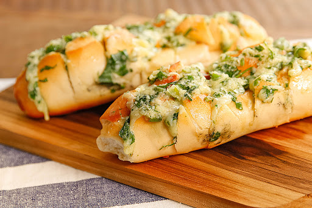

Página Inicial
Entradas
Pratos de Carne
Pratos de Peixe
Pratos de Marisco
Pratos Vegetarianos
Sobremesas
Bebidas
Fórum
Mini-Jogo
Login

Pão de Alho com Queijo e Oregãos
Tempo de Confeção:
5 minutos
Ingredientes:
- 2 pães tipo "baguete"
- 2/3 colheres de sopa de manteiga
- 3/2 dentes de alho picados
- 150g queijo ralado (o tipo de queijo fica a seu critério)
- oregãos q.b.
- azeite
Preparação:
1. Corte ambos os pães ao meio e dê vários golpes na diagonal em cada um dos bocados cortados.
2. Junte a manteiga já derretida, os dentes de alho e os oregãos e misture um fio de azeite.
3. Pincele os pães com o preparado anterior e adicione o queijo por cima.
4. Com o forno já aquecido a cerca de 180ºC, leve os pães ao forno durante cerca de 5 minutos, até o queijo derreter e os pães ficarem com uma cor dourada.
Tostas com Patê de Salmão Fresco
Tempo de Confeção:
5 minutos
Ingredientes:
- 100g de salmão fresco
- 150g queijo creme
- 1 colher de chá de sumo de limão
- sal q.b.
- cebolinho q.b.
Preparação:
1. Corte o salmão em pedaços pequenos.
2. Junte o salmão, o queijo creme, o sumo de limão e misture tudo bem.
3. Com o auxilio de uma varinha mágica, triture tudo até ficar um amistura cremosa.
4. Tempere com sal e volte a mexer bem.
5. Coloque um pouco de cebolinho por cima do patê.
6. Sirva o patê acompanhado com tostas.